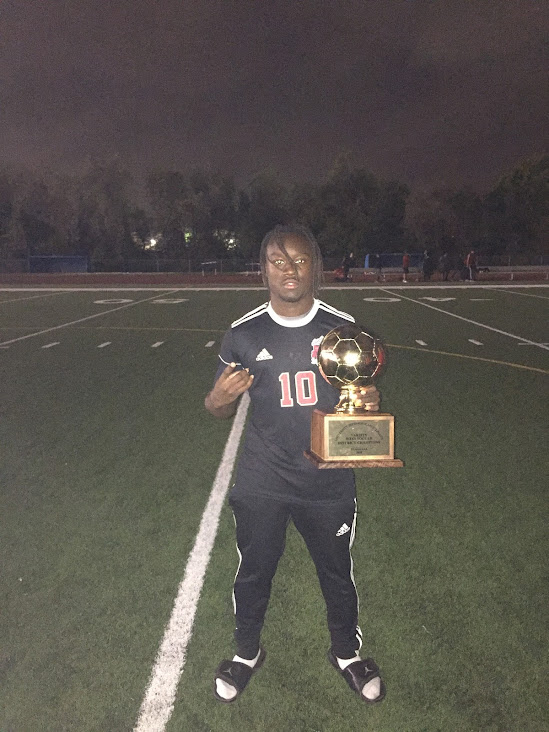

BEYOND THE CODE
A life beyond the screen.
Sports and community have always been part of my story. They are a reminder that shared goals and human connections matter — a perspective I bring to my work as a developer.

People give the work purpose.
I care about building useful things, communicating clearly, and making a positive contribution to the teams and communities around me.
Explore my development work ↗